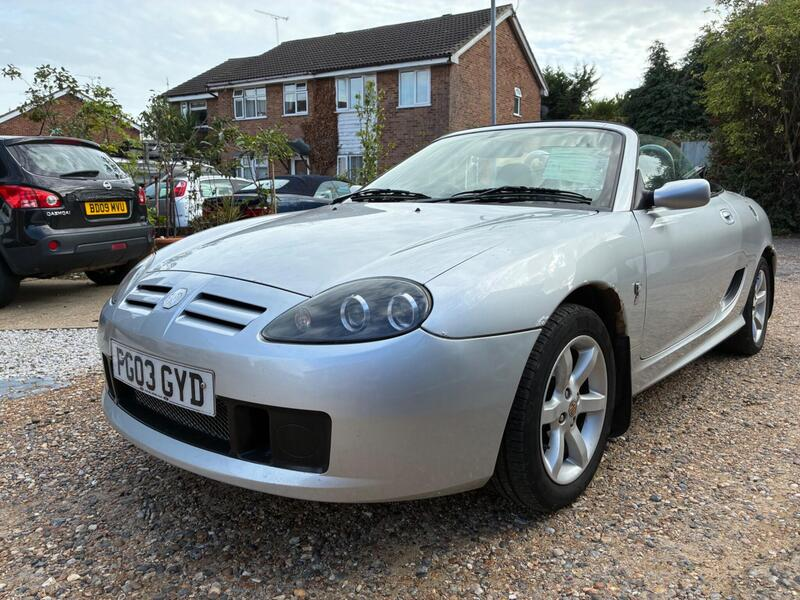
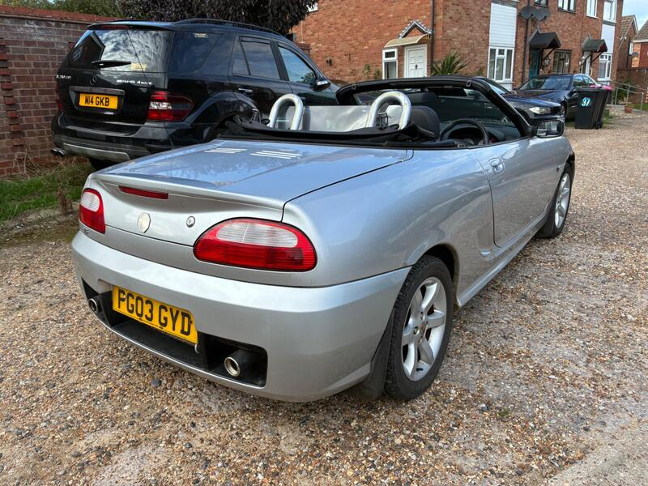
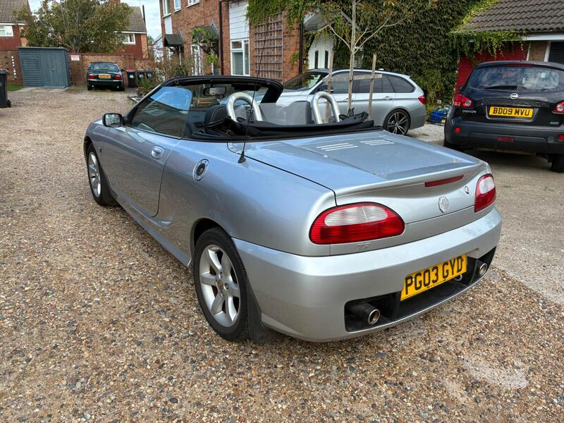
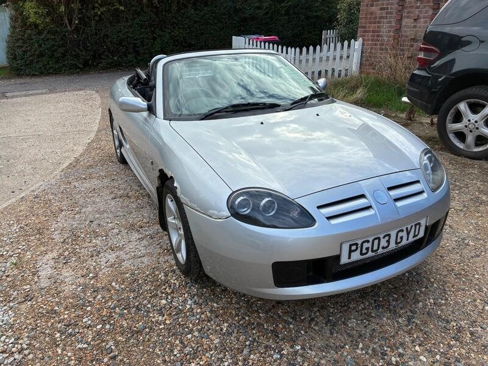

← All 50Ranked #3 of 50




Seller photos from the AutoTrader ad.
✓ Checked 13 Oct
2003 · MG TF
MG TF 1.8
Cheapest car here at £990, with low miles.
£99051,000 miles · Southend-On-Sea · 62 mi from GU7
View on AutoTrader ↗Key facts
| Price | £990 |
|---|---|
| Year | 2003 |
| Miles | 51,000 |
| Model | MG TF 1.8 |
| Colour | Silver |
| Registration | 2003 (03 reg) |
| Owners | 4 owners |
| Service history | Not stated |
| MOT | 12 Apr 2027 (ad) |
| Seller | Trade |
| Location | Southend-On-Sea |
| From GU7 | 62 mi (AutoTrader) |
| Checked | 13 Oct 2026 |
Why buy it
- 51k miles, cambelt and water pump done at 43k (ad)
Things to check
Driver's front wing needs work (ad)
Ask about the head gasket
- MG MGF / TF weak spots
Can be serious underneath; mild-steel underfloor coolant pipes rust; radiators corrode. K-series head gasket – want proof of MLS gasket, revised oil rail, replaced dowels; VVC mechanism; Hydragas suspension on MGF.
Seller says (extract)
“Mot till12/04/2027 Low mileage at 51k with service history cambelt and water pump change at 43k Drives great and smooth gearbox and engine seem great Electric windows After market stereo Could do with front wing drivers side Little bit tidying up But cheap with such low miles and service history…”